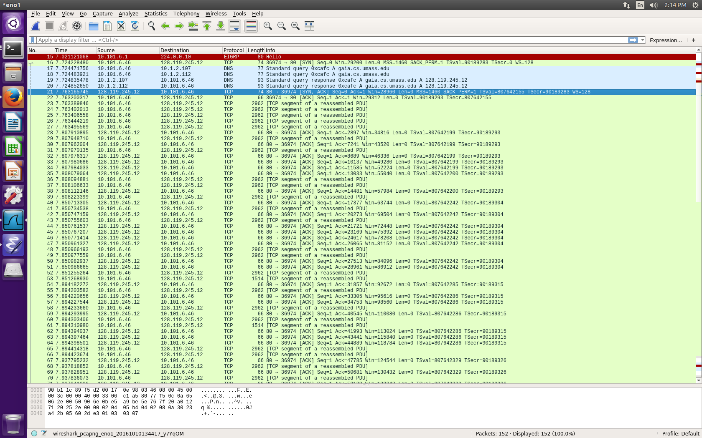

Today in lab, I worked through the Wireshark lab for TCP. I uploaded a text file of Alice in Wonderland to the books website. Using Wireshark, I was able to see the packets being sent as I did this.I was able to track my IP and the IP address of Gia.cs.umass.edu. I was able to track a series of TCP segments that have been sent between my computer and gia.cs.umass.edu.
Reading sections 3.1, 3.2, 3.3.
I focused on the connection-oriented and connectionless transport. Also, I tried to fully understand checksums as they will be important when it comes to RDT.
I am attempting to focus on a newer "gadget" that can be used in a modern web page. Today's focus was on Accordions. These are essentially buttons that expand an element under themselfs if clicked. These inlcude HTML, CSS, and JS.